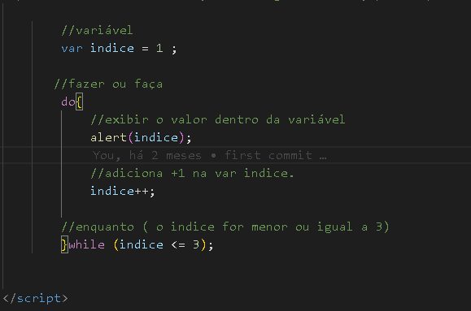

Laço de Repetição Faça,Enquanto "DO, WHILE"
Enquanto for "isso" faça "aquilo".
Para executar uma ação várias vezes e depois faz uma verificação.
Força a exibição de algo antes para depois fazer a validação.
No exemplo irá mostrar o indice, enquanto ele for menor ou igual a 3,
terá que exibir do 1 ao 3 .
Exemplo de código:
Abra a tag "script" dentro dela coloque:
//variável
var indice = 1 ;
// Laço de repetição
Do {
//exibir a mensagem, com o indice.
_________alert(indice);
indice++; * importante ter para parar o loop *
//enquanto ( o indice for menor ou igual a 3)
}while (indice <= 3);
Fecha a tag "/script"
Veja como é o código:

Agora veja como seria, clicando no botão abaixo: